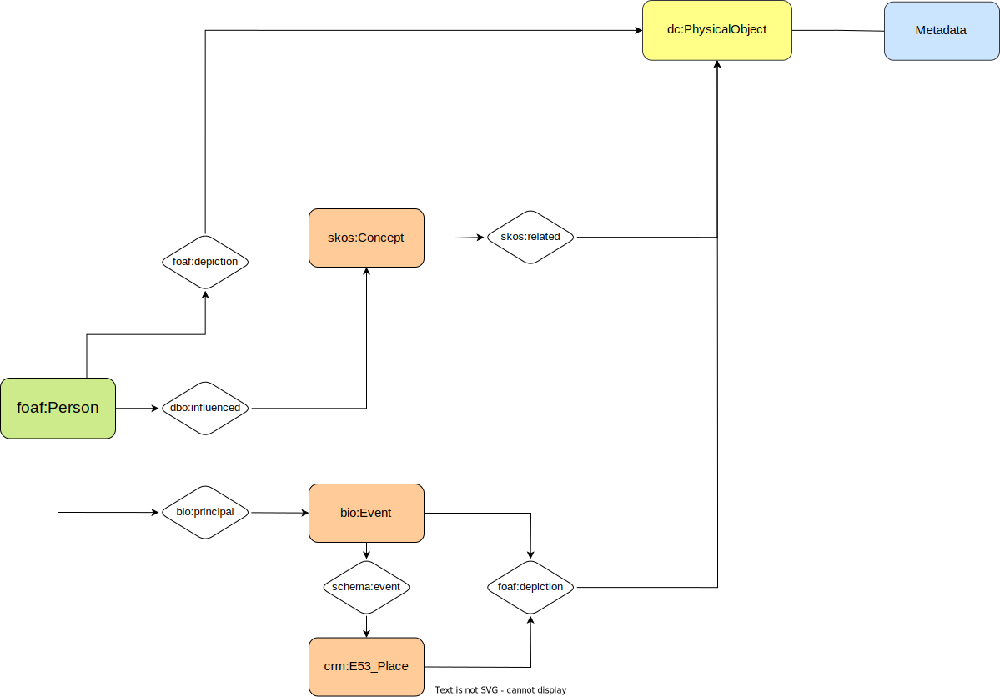

Theoretical Model
Theoretical model is that can explain specific questions
and answers to the selected items. Questions consists of
Who?, Where?, When? and What?
Who?
In this project, the central event, place, or content of a
person's life was planned to be expressed. Therefore, in the
case of this model, in addition to the basic information of a
person, it is important to consider what the person has accomplished
in life, such as his job or achievement. In order to describe accurately,
i decided to use FOAF, DBpedia, PCV, GNDO and Core Concepts Ontology
Where?
For places, I thought that a more microscopic approach was necessary
because the location of the main character's activities was limited to one
country. Therefore, I thought it was appropriate to use Geo Names, Basic Geo,
DBpedia, Schema, and FOAF.
When?
It was mainly based on the year he was born to the year of his death,
but the time of some items was not included in the standard, so i did
not set a specific period. It was decided to encode all dates in complete
date YYYY-MM-DD and YYYY formats using the international standard ISO 8601.
What?
The project was planned based on how he derived a new concept based on what
he had absorbed in the past. Therefore, in this case, I felt the need to
explain historical knowledge, and based on that point, I tried to express
it through BIO, CIDOC-CRM, DCMI metadata Terms, EVENT, FOAF, SKOS, and DBpedia.
Theoretical graphs

People
| Question |
Predicate |
Model |
| What type of entity? |
rdf:type |
RDF |
| What is the person's name? |
foaf:firstName |
FOAF |
| What is the person's surname? |
foaf:lastName |
FOAF |
| What is the gender? |
foaf:gender |
FOAF |
| What is the person nationality? |
dbo:nationality |
DBpedia |
| In which place was the person born? |
person:placeOfBirth |
PCV |
| In which country was the person born? |
person:countryOfBirth |
PCV |
| When was the person born? |
gndo:dataOfBirth |
GNDO |
| When did the person die? |
gndo:dataOfDeath |
GNDO |
| Where did the person die? |
person:placeOfDeath |
GNDO |
| Where did the person live? |
dbo:livingPlace |
DBpedia |
| What topic that person is interested in philosophy? |
foaf:interest |
FOAF |
| Where was the person active? |
gndo:placeOfActivity |
GNDO |
| What did the person influence? |
dbo:influenced |
DBpedia |
| In which resource is the person depicted? |
foaf:depiction |
FOAF |
| What is the person's occupation? |
core:occupation |
Core Concepts Ontology |
| What did the person do? |
core:knownFor |
Core Concepts Ontology |
Place
| Question |
Predicate |
Model |
| What is the genetic type? |
rdf:type |
RDF |
| What is the name of the place? |
gn:name |
GeoNames |
| What is the alternative name of the place? |
gn:alternateName |
GeoNames |
| In which country is the place located? |
gn:parentCountry |
GeoNames |
| What is the country code? |
gn:countryCode |
GeoNames |
| what is the latitude? |
geo:lat |
Basic Geo |
| What is the longitude? |
geo:long |
Basic Geo |
| What is the place wikipedia page? |
dbo:wikiPageExternalLink |
DBpedia |
| What is the description? |
dbo:abstract |
DBpedia |
| What is the event associated to the place? |
schema:event |
Schema |
| In which resource is the place depicted? |
foaf:depiction |
FOAF |
When
| Question |
Predicate |
Model |
| What type of entity? |
rdf:type |
RDF |
| What is the duration of the event? |
time:hasTemporalDuration |
Time Ontology |
| When is the beginning of the time span? |
time:hasBeginning |
Time Ontology |
| When is the end of the time span? |
time:hasEnd |
Time Ontology |
Event
| Question |
Predicate |
Model |
| What type of entity? |
rdf:type |
RDF |
| what is the title? |
crm:P102_has_title |
CIDOC-CRM |
| What is the subject? |
dcterms:subject |
DCMI Metadata Terms |
| What was motivated by? |
crm:P17_was_motivated_by |
CIDOC-CRM |
| Who is the person that officiates at a protest event? |
bio:officiator |
BIO |
| Where was the event held? |
bio:place |
BIO |
| When was the event held? |
bio:date |
BIO |
| Is there an item related to the event? |
event:factor |
EVENT |
| Where is depicted? |
foaf:depiction |
FOAF |
| What is the event wikipedia page? |
dbo:wikiPageExternalLink |
DBpedia |
Concept
| Question |
Predicate |
Model |
| What type of entity? |
rdf:type |
RDF |
| what is the title? |
crm:P102_has_title |
CIDOC-CRM |
| Which resource has the concept as primary topic? |
foaf:isPrimaryTopicOf |
FOAF |
| What are the books related to the concept? |
skos:related |
SKOS |
| When did it start? |
dbo:start |
DBpedia |
The result

Arne naess (Person)
| Question |
Predicate |
Object |
| What type of entity? |
rdf:type |
Person |
| What is the person's name? |
foaf:firstName |
Arne |
| What is the person's surname? |
foaf:lastName |
Naess |
| What is the gender? |
foaf:gender |
Male |
| What is the person nationality? |
dbo:nationality |
Norway |
| In which place was the person born? |
person:placeOfBirth |
Slemdal, Oslo |
| In which country was the person born? |
person:countryOfBirth |
Norway |
| When was the person born? |
gndo:dataOfBirth |
1912-01-27 |
| When did the person die? |
gndo:dataOfDeath |
2009-01-12 |
| Where did the person die? |
person:placeOfDeath |
Oslo |
| Where did the person live? |
dbo:livingPlace |
Hallingskarvet |
| What topic that person is interested in philosophy? |
foaf:interest |
Environmental Philosophy
Environmental Ethics |
| Where was the person active? |
gndo:placeOfActivity |
Norway |
| What did the person influence? |
dbo:influenced |
Deep Ecology |
| In which resource is the person depicted? |
foaf:depiction |
Documentary Film about Arne Naess |
| What is the person's occupation? |
core:occupation |
Philosopher |
| What did the person do? |
core:knownFor |
Philosopher
Writer
Professor
Mountaineer |
Mardalsfossen (Place)
| Question |
Predicate |
Object |
| What is the genetic type? |
rdf:type |
Plcce |
| What is the name of the place? |
gn:name |
Tiered Waterfall |
| In which country is the place located? |
gn:parentCountry |
Norway |
| what is the latitude? |
geo:lat |
62.4718943ºN |
| What is the longitude? |
geo:long |
8.119833472ºN |
| What is the place wikipedia page? |
dbo:wikiPageExternalLink |
en.wikipedia.org/wiki/Mardalsfossen |
| What is the description? |
dbo:abstract |
Mardalsfossen is a waterfall in
Molde Municipality
in Møre og Romsdal county,
Norway. It is sometimes
referred to as one of
the tallest waterfalls in Europe. |
| What is the event associated to the place? |
schema:event |
Mardøda Campaign |
| In which resource is the place depicted? |
foaf:depiction |
Landscape Photograph |
Mardøla Campaign (Event)
| Question |
Predicate |
Object |
| What type of entity? |
rdf:type |
Group event |
| what is the title? |
crm:P102_has_title |
Mardøla campaign |
| What is the subject? |
dcterms:subject |
Arne Naess
Sigmund Kvaløy Setreng
Odd Einar Dørum |
| What was motivated by? |
crm:P17_was_motivated_by |
Civil disobedience |
| Who is the person that officiates at a protest event? |
bio:officiator |
Cooperation groups for nature
and environmental protection |
| Where was the event held? |
bio:place |
Eikesdal |
| When was the event held? |
bio:date |
1970-07-27 |
| Is there an item related to the event? |
event:factor |
Documentary film
Campaign poster |
| Where is depicted? |
foaf:depiction |
Campaign Photograph
Campaign poster |
| What is the event wikipedia page? |
dbo:wikiPageExternalLink |
no.wikipedia.org/wiki/Mard%C3%B8la-aksjonen |
Deep ecology (Concept)
| Question |
Predicate |
Object |
| What type of entity? |
rdf:type |
Concept |
| what is the title? |
crm:P102_has_title |
Deep ecology |
| Which resource has the concept as primary topic? |
foaf:isPrimaryTopicOf |
Environmental Philosophy |
| What are the books related to the concept? |
skos:related |
Slient Spring
Ethica |
| When did it start? |
dbo:start |
1973 |
| What is the event wikipedia page? |
dbo:wikiPageExternalLink |
en.wikipedia.org/wiki/
Deep_ecology |
| What is the concept definition? |
skos:definition |
It is an environmental philosophy
that promotes the inherent worth
of all living beings regardless of
their instrumental utility to human
needs, and the restructuring of modern
human societies in accordance with such ideas. |
RDF
For this final step, data is described using a RDF statement that I decided to serialize through Turtle. I,
especially, selected three main entities: people(Arne Naess), place(Mardalsfossen) and event(Mardøla Campaign).
The raw version of RDF and visual representation of RDF also can be discovered..
@base <https://arnenaesslod.github.io/>.
@prefix rdf: <https://www.w3.org/TR/rdf-schema/#>.
@prefix foaf: <https://xmlns.com/foaf/0.1/>.
@prefix gn: <http://www.geonames.org/ontology> .
@prefix dbo: <http://dbpedia.org/ontology/>.
@prefix person: <http://www.w3.org/ns/person/>.
@prefix gndo: <https://d-nb.info/standards/elementset/gnd#>.
@prefix core: <https://www.bbc.co.uk/ontologies/coreconcepts/>.
@prefix xsd: <http://www.w3.org/2001/XMLSchema>.
@prefix geo: <http://www.w3.org/2003/01/geo/wgs84_pos#>.
@prefix schema: <http://schema.org/>.
@prefix crm: <http://www.cidoc-crm.org/cidoc-crm/>.
@prefix dcterms: <http://purl.org/dc/terms/>.
@prefix bio: <http://purl.org/vocab/bio/0.1/>.
@prefix dbc: <http://dbpedia.org/resource/Category:>.
<person/Arne_Naess>
rdf:typefoaf:Person;
foaf:firstName'Arne';
foaf:lastName'Naess';
foaf:gender'Male';
person:placeOfBirthgn:3138308; #Slemdal, Oslo
person:countryOfBirthgn:3144096; #Norway
gndo:dataOfBirth'1912-01-27'^^xsd:date;
gndo:dataOfDeath'2009-01-12'^^xsd:date;
person:placeOfDeathgn:3143244; #Oslo
dbo:livingPlacegn:3154173; #Hallingskarvet
foaf:interest'Environmental Philosophy',
'Environmental Ethics';
gndo:placeOfActivitygn:3144096, #Norway
dbo:influenced<concept/Deep_Ecology>;
foaf:depiction<item/Documentary_Film_about_Arne_Naess>;
core:occupation'Philopher';
core:knownFor'Philosopher',
'Writer',
'Professor',
'Mountaineer';
dbo:wikipageExternalLink<https://en.wikipedia.org/wiki/Arne_N%C3%A6ss>.
<place/Mardalsfossen>
rdf:typecrm:E53_Place;
gn:name'Mardalsfossen';
gn:parentCountrygn:3144096; #Norway
geo:lat'62.4718943';
geo:long'8.119833472';
dbo:wikipageExternalLink<https://en.wikipedia.org/wiki/Mardalsfossen>;
dbo:abstract'Mardalsfossen is a waterfall in Molde Municipality in Møre og Romsdal county, Norway. It is sometimes referred to as one of the tallest waterfalls in Europe.';
schema:event<evnet/Mardøla_Campaign>;
foaf:depiction<item/Landscape_Photograph>.
<event/Mardøla_Campaign>
rdf:typebio:GroupEvent;
crm:P102_has_title'Mardøla Campaign';
dcterms:subject<https://en.wikipedia.org/wiki/Environmental_movement>;
bio:principal<person/Arne_Naess>,
<person/Sigmund_Kvaløy_Setreng>,
<person/Odd_Einar_Dørum>;
crm:P17_was_motivated_bydbc:Civil_disobedience;
bio:officiator'Cooperation groups for nature and environmental protection';
bio:placegn:3158545; #Eikesdal
bio:date'1970-07-27'^^xsd:date;
foaf:depiction<item/Campaign_Photograph>,
<item/Campaign_Poster>;
dbo:wikipageExternalLink<https://no.wikipedia.org/wiki/Mard%C3%B8la-aksjonen>.
RDF graph